Juega para ganar
Te gana en backgammon y en ajedrez, y luego te ofrece la revancha.
Calle Ciega es la calle sin salida a la que se llega por error y de la que nadie quiere irse. Y es la cata a ciegas: sin etiquetas, sin pena.
Igual que Lagniappe significa “un poquito extra”, el nombre cuenta la experiencia en una frase: entras por una copa y te quedas la noche.
Nace de la idea de que una copa de vino no tiene por qué ser solemne.
Un lugar relajado y sin pretensiones, donde eliges tu botella de la pared, pides una tabla para compartir y retas a tus amigos a una partida de billar. Vino, charcutería, juegos y música en vivo: un espacio que todos sientan suyo.

Te gana en backgammon y en ajedrez, y luego te ofrece la revancha.
Sabe de vino y de muchas otras cosas, pero nunca te lo restriega.
Su mejor arma es la plática: se sienta contigo, abre una botella y no te quieres ir.
Ingenio y humor antes que solemnidad. Cero pretensión.
Perro de la colonia, de los de toda la vida. Ingenioso e inteligente, pero con los pies en la tierra, y siempre curioso: huele todo y pregunta todo. Es la cara de la casa, en la puerta, la etiqueta y la carta.
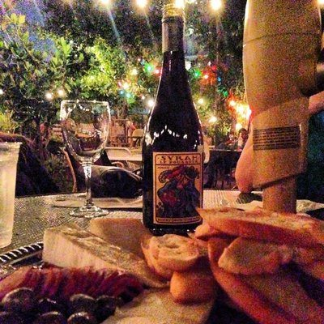
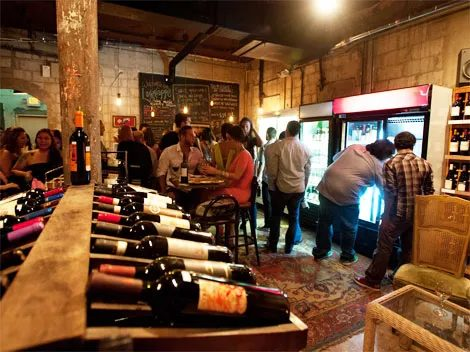
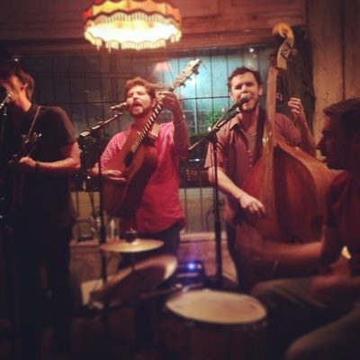
Casa vieja con patio de foquitos y árboles. Eliges tu botella de las neveras, armas tu tabla de quesos y charcutería y te sientas afuera. Música en vivo cada noche; sin reservaciones.
Tomamos: elegir y armar, y el patio. No tiene: juegos.
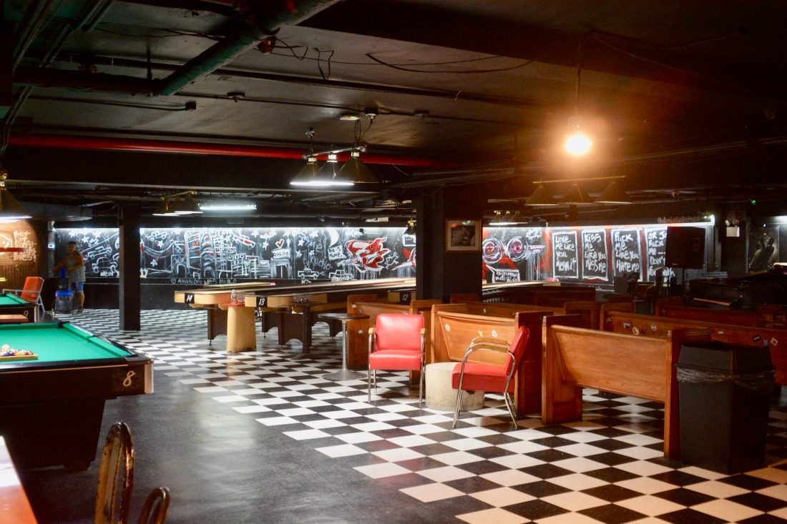
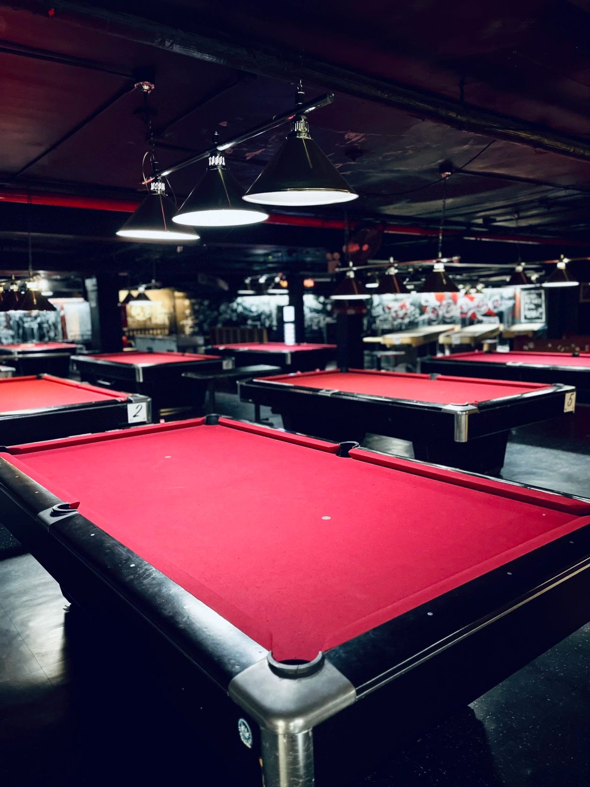
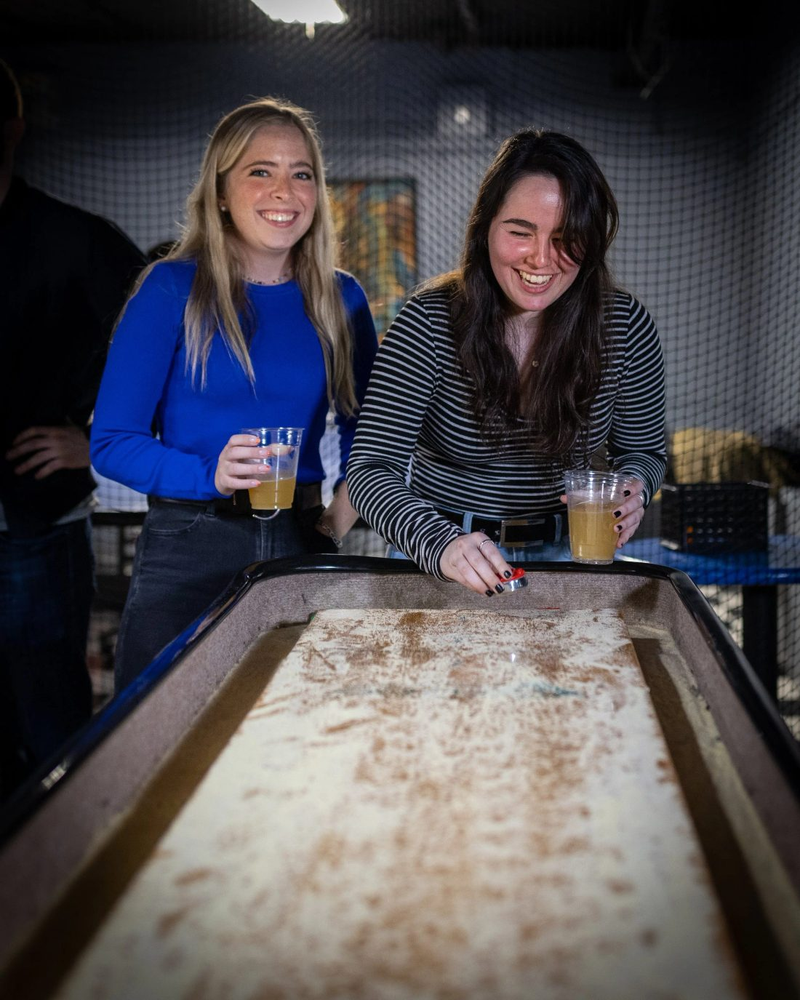
Sótano de unos 9,000 pies² (≈ 835 m²) en el West Village. Billar, ping pong y shuffleboard por orden de llegada, juegos de mesa y jazz en vivo desde las 7 pm. Bar de barrio, social y accesible.
Tomamos: los juegos y la música. No es: bar de vino ni de mesa larga.
Fotos de lagniappehouse.com, novacircle.com y cellardog.net. Solo para uso interno del proyecto.
Pared de botellas para elegir y abrir en mesa, más una selección corta por copa.
Tablas de quesos y carnes curadas para compartir. Cocina simple, producto bueno.
Billar, shuffleboard y backgammon, con música en vivo varias noches por semana.


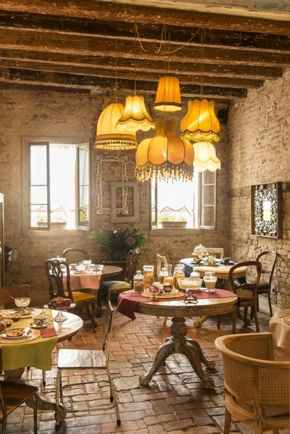
Referencias de nuestro tablero de Pinterest, completas y sin recorte. Solo para uso interno.

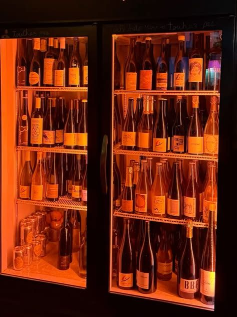

Paredes blancas con color: ver el render del patio de día. Referencias de Pinterest, solo para uso interno.
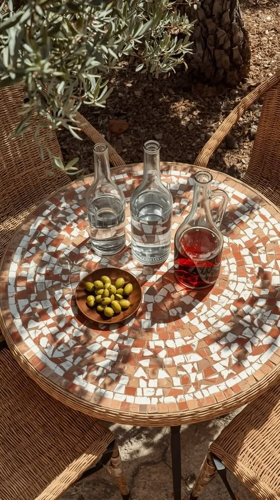
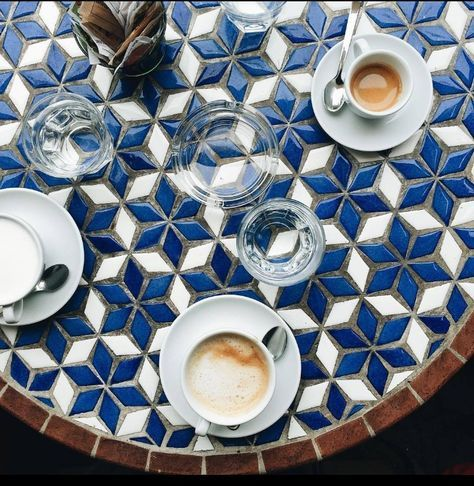
Mosaico, azul y blanco, terracota: el patio al sol, con el mismo idioma que nuestros sellos.


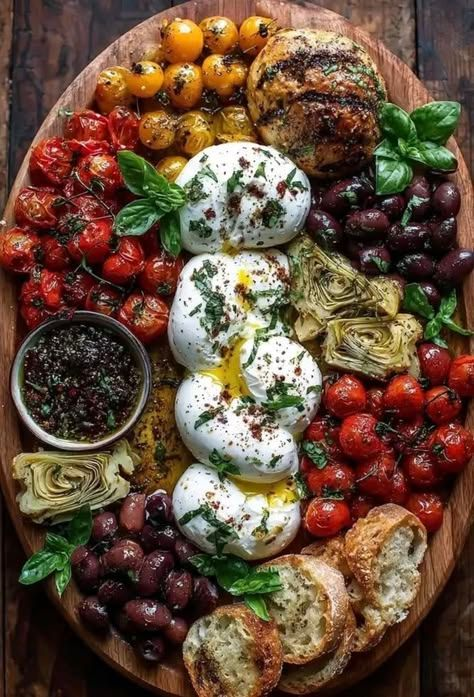


Quesos, jamón, higos, burrata, aceitunas y pan. Mucha mesa y poca ceremonia: así debe verse una tabla de la casa.
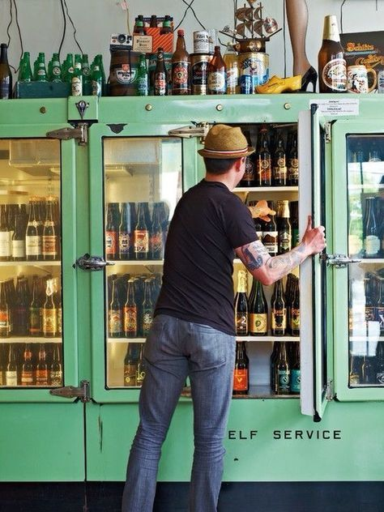
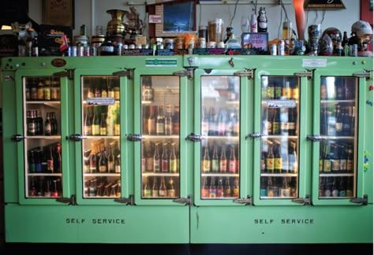


Refris de autoservicio, latas con stickers y paredes de botellas: aquí viven la cerveza y el vino.


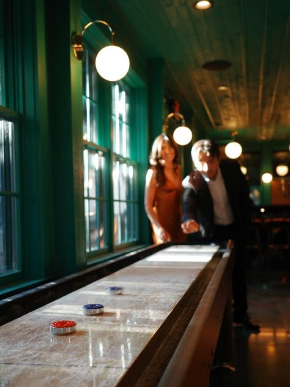


Jazz en vivo, lámparas de pantalla, shuffleboard y backgammon. Es el lado del bar: bajar la luz y quedarse.
Paredes blancas para que exploten los colores de los muebles.
Paredes y pisos intervenidos, con murales pintados por nosotros.
Plantas por todos lados: denso, casi selva.
Baratas, cómodas y chiquitas. De todos tipos, ninguna igual. Si llegan 12 amigos, que quepan.
Aquí sí invertimos: mesas de jardín de mosaico de piedritas, con epoxi y mucho color.
Una vitrina con las botellas vacías más chingonas que nos hemos tomado.
Vibe: picnic casual, pero muy cool.
Naturales, clásicos y de todo un poco: [___] etiquetas, por copa y por botella.
Ahí está la curaduría: vinos buenos con precio de origen razonable. Equivale a €15–40 a ≈ $20 MXN por euro; falta confirmar el tipo de cambio del día.
Cervezas artesanales para quien no es de vino.
Traerlos, guardarlos y venderlos con buen margen. Buscamos un aliado experto: [___].
Sin chef: cualquiera del staff la arma y te la lleva.


El cartel de la casa puede cambiar de reparto cada temporada y vivir en la calle, la carta y las bolsas.
Mesa de 8 pies: pide un cuarto de unos 14 × 18 pies (≈ 4.3 × 5.5 m) para mover el taco. Es el juego que más espacio cuesta.
En Cellar Dog se juega por orden de llegada y llegó a haber filas de 2 horas: pensar en lista de espera.
Larga y angosta: una mesa de 12 pies pide unos 18 pies (≈ 5.5 m) de largo contando los extremos. Va bien pegada a un muro.
Referencia de tienda: $34,392–$42,990 MXN, mesa de madera de uso doméstico. Para bar hay que cotizar.
Casi no ocupa espacio: un tablero en cada mesa de mosaico y ya hay juego. Es el que ya aparece en nuestras ilustraciones.
Va con ajedrez, dominó y cartas. [___] m² destinados a juegos.
Medidas de fabricantes de mesas (recomendación de sala); falta confirmarlas contra el espacio real.
| Lagniappe · Miami | Cellar Dog · Nueva York | Calle Ciega | |
|---|---|---|---|
| Modelo | Casa vieja con patio. Eliges botella de las neveras y armas tu tabla. | Sótano de jazz y juegos (≈ 9,000 pies² / 835 m²), bar de barrio. | Tienda al frente y patio: eliges vino, armas tu tabla, juegas. |
| Música | En vivo cada noche, 9 pm a medianoche: jazz, soul, blues. | Jazz en vivo desde las 7 pm todos los días. | En vivo, [___] noches por semana. |
| Juegos | Ninguno mencionado en las fuentes. | Billar, ping pong, shuffleboard y juegos de mesa; por orden de llegada. | Billar, shuffleboard y backgammon. |
| Comida | Tablas y parrilla sencilla: churrasco, pescado, choripán. | Botanas sencillas; las fuentes no coinciden. | Cocina fría, sin chef. |
| Entrada | Sin reservaciones. Cover no indicado. | Cover de $5 (dom–jue) y $10 (vie–sáb) según un solo medio; reservaciones sin confirmar. | [A definir] |
Fuentes: lagniappehouse.com, likealocalguide.com, askthecity.com, cellardog.net, helpnewyork.com, p2bars.com. Datos de terceros sin verificar; confirmar antes de citar.
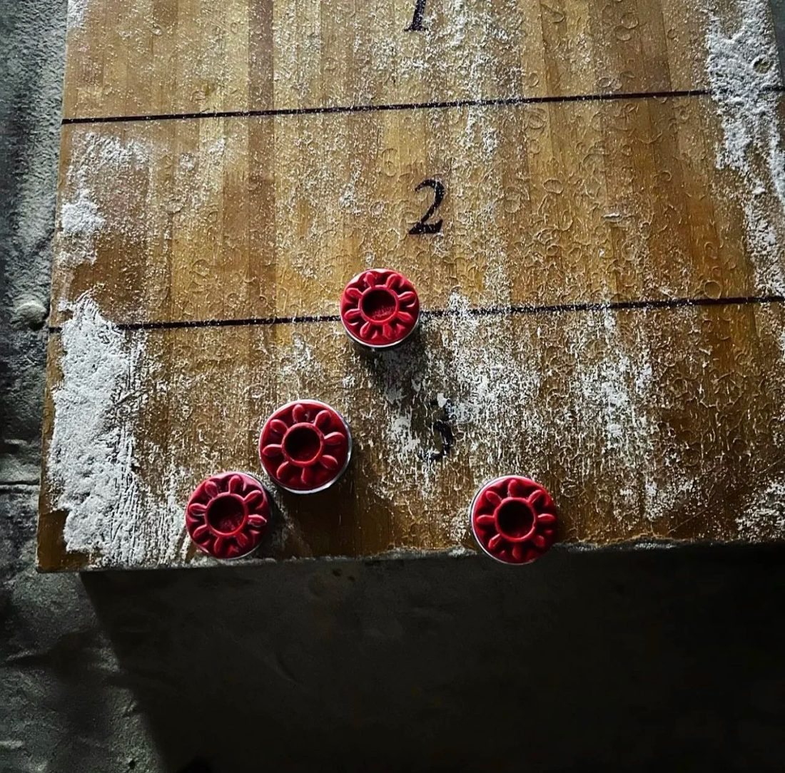
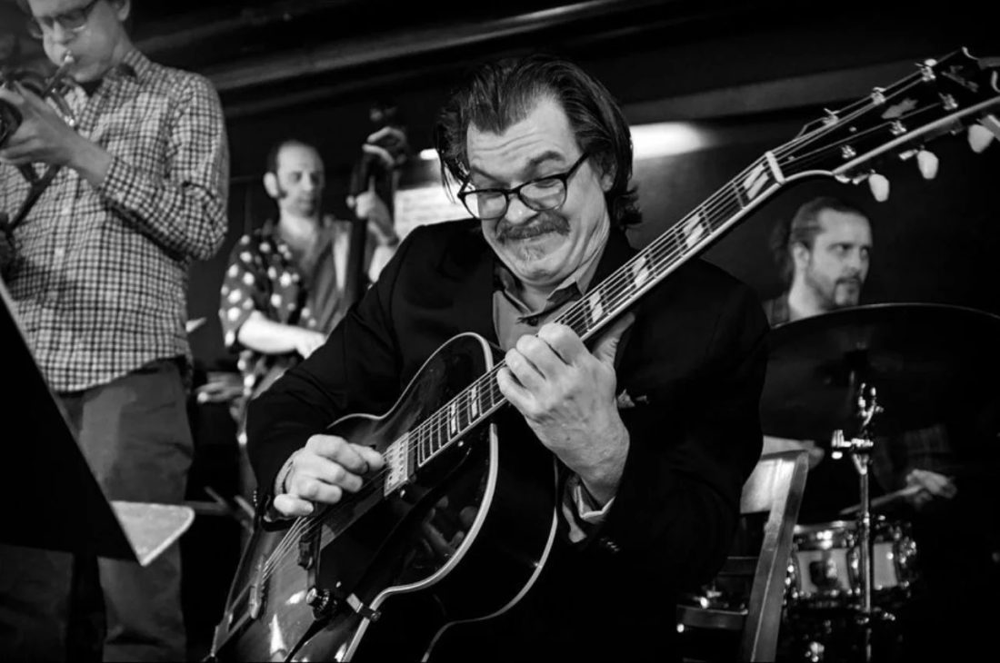
Cellar Dog, NYC: billar, shuffleboard y jazz. Backgammon: nuestro tablero de Pinterest. Solo uso interno.
| Día | Programa |
|---|---|
| Martes | [Jazz trío] |
| Jueves | [Bossa / trova] |
| Viernes y sábado | [Banda en vivo + DJ de vinilos] |
| Domingo | [Torneo de billar / tarde de juegos] |
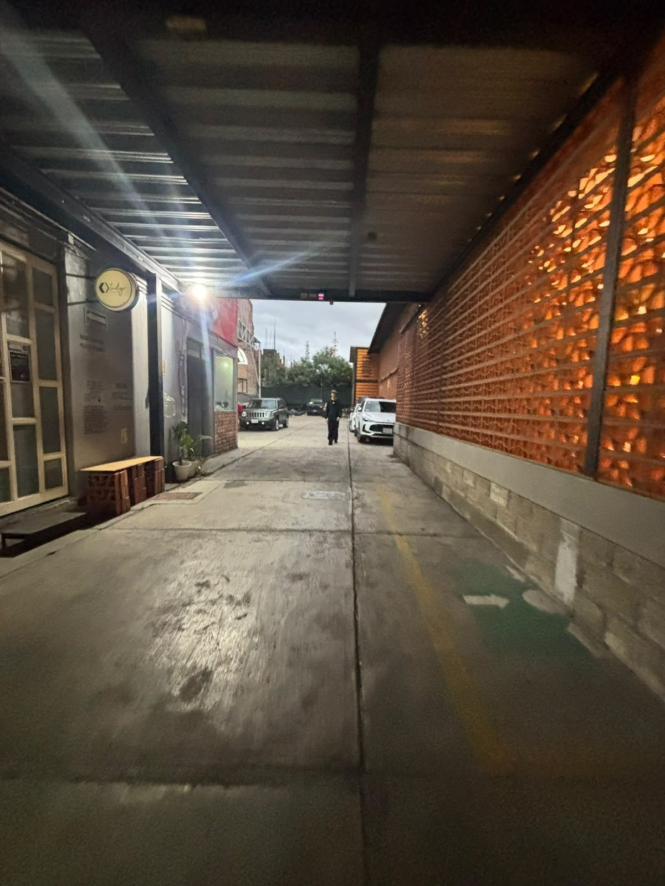
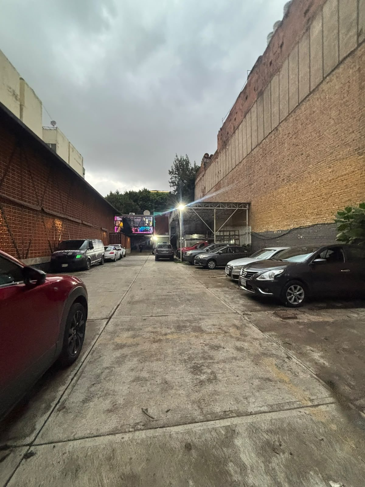
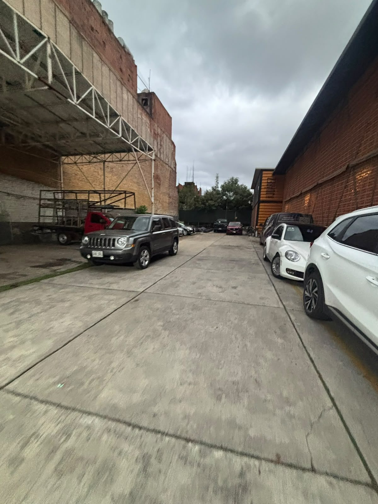
Colonia Juárez, CDMX
[___] m² · planta baja + patio
Renta: [$___ MXN] / mes
Hoy es un estacionamiento con celosía de barro, muro de tabique y árboles al fondo. [Por qué esta zona: flujo, vecinos, vida nocturna]

Render de concepto hecho con IA a partir de las fotos del sitio. No es proyecto ejecutivo ni tiene medidas.

Render de concepto hecho con IA a partir de las fotos del sitio. No es proyecto ejecutivo ni tiene medidas.
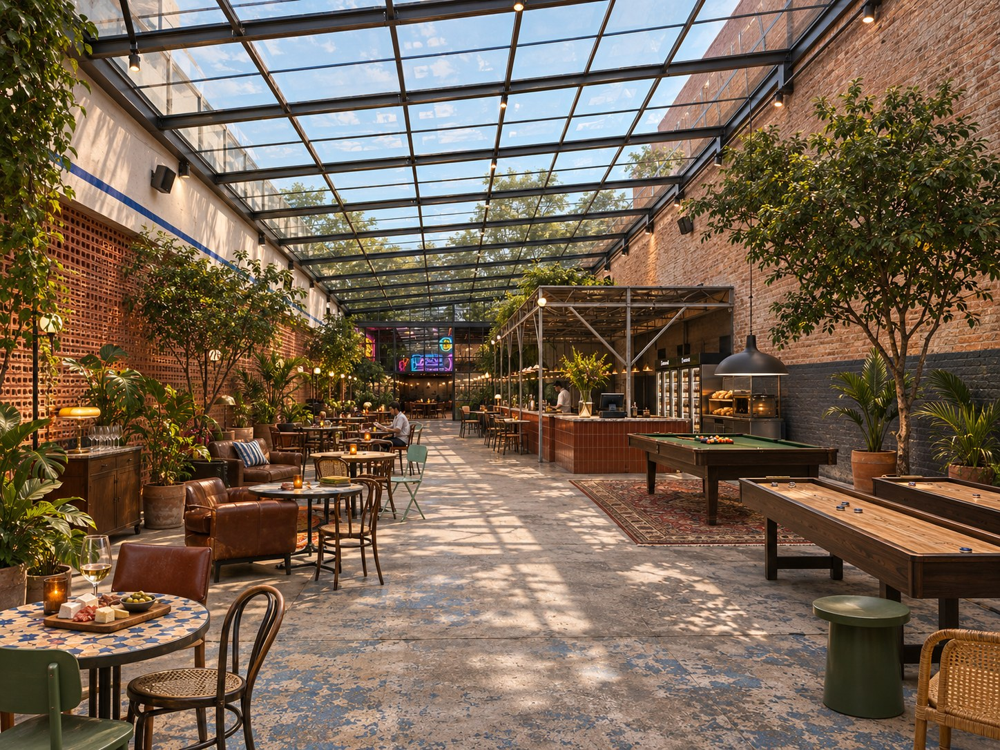
Render de concepto hecho con IA a partir de las fotos del sitio. No es proyecto ejecutivo ni tiene medidas.
Maquetas de muestra hechas con las piezas aprobadas; los textos no son menú real.
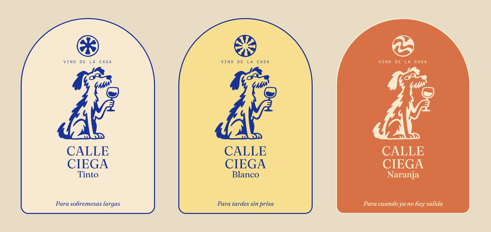
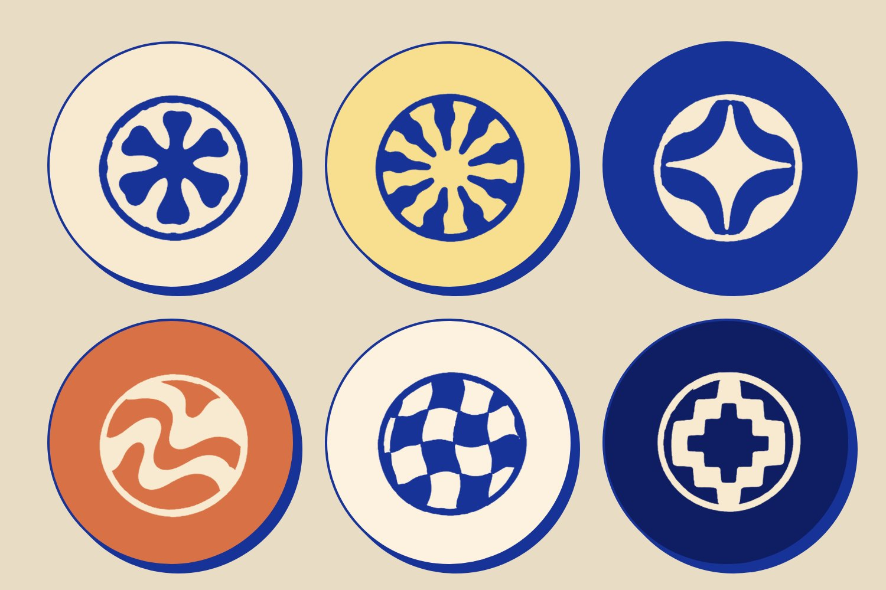
Un sello de azulejo por posavasos: flor, greca, ola, estrella, sol y damero. Se pueden juntar, cambiar y coleccionar.
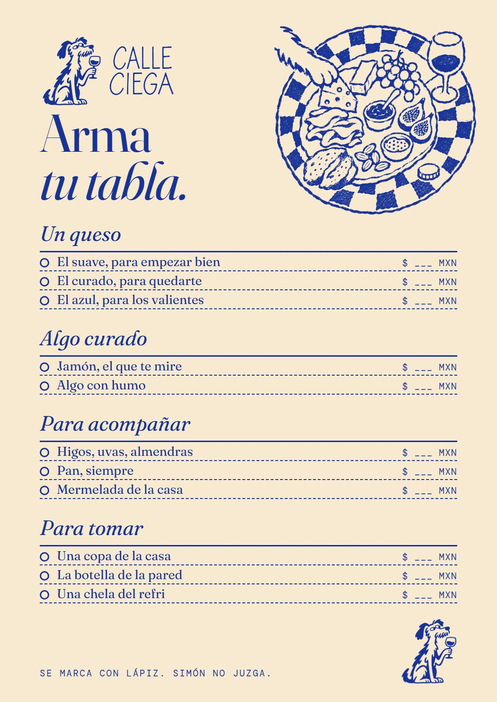
Una hoja A5 para marcar: un queso, algo curado, algo para acompañar y algo para tomar. Los precios van en pesos mexicanos y se llenan con la operadora.
Textos de muestra; precios en blanco.